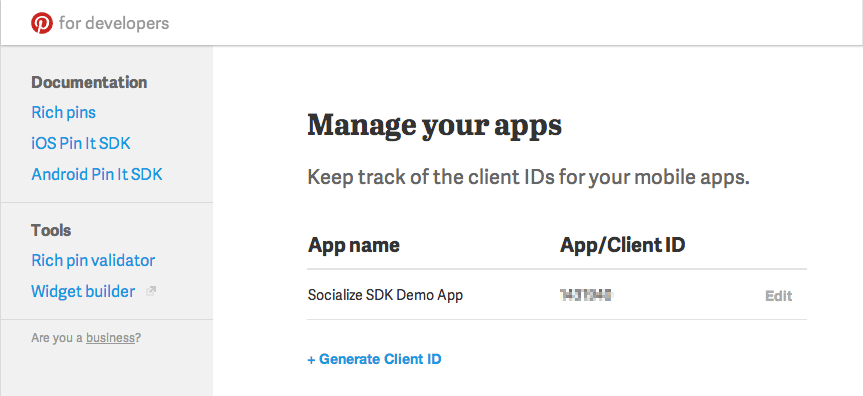

Sharing to Pinterest¶
Pinterest (http://www.pinterest.com) recently released an SDK for Android what can be easily integrated into the Socialize process.
By leveraging the Socialize SmartDownload infrastructure all shares to Pinterest can be tracked and optimized along with all other share events.
The following code snippets show how to implement a basic Pinterest Pin.
Step 1 - Download the Pinterest SDK¶
The Pinterest SDK is a single JAR file you can simply add to the libs folder of your Android project
Step 2 - Register as a developer on Pinterest¶
You will need a Pinterest Client ID to be able to call the Pinterest SDK:
Step 3 - Share to Pinterest!¶
The following is a baseline example of how to share to Pinterest. You can modify or extend this to be triggered on the click of a button or any other user initiated action
// Your Pinterest client ID (CHANGE THIS)
String PINTEREST_CLIENT_ID = "123456";
// Set the partner ID on the PinIt instance (this can be done anywhere)
PinIt.setPartnerId(PINTEREST_CLIENT_ID);
final Activity context = this;
// The URL of the image being shared
final String imageUrl = "http://some.image.to.share/wow.jpg";
// Create an entity to represent the image
Entity entity = Entity.newInstance(imageUrl, "My Picture!");
ShareOptions options = ShareUtils.getUserShareOptions(this);
final ProgressDialog dialog = SafeProgressDialog.show(this);
// Create a Socialize share object to enable tracking of the share
ShareUtils.registerShare(this, entity, options, new ShareAddListener() {
@Override
public void onCreate(Share share) {
// Get the propagation info based on the share type of OTHER
PropagationInfo propagationInfo = share.getPropagationInfoResponse().getPropagationInfo(ShareType.OTHER);
// Create a PinIt instance and set the properties you need.
PinIt pinIt = new PinIt();
pinIt.setImageUrl(imageUrl);
// Use the URL from the share object
pinIt.setUrl(propagationInfo.getEntityUrl());
pinIt.setDescription(share.getEntityDisplayName());
pinIt.setListener(new PinItListener() {
@Override
public void onComplete(boolean completed) {
dialog.dismiss();
if(completed) {
Toast.makeText(context, "Shared to Pinterest!", Toast.LENGTH_LONG).show();
}
else {
Toast.makeText(context, "Share Failed!", Toast.LENGTH_LONG).show();
}
}
@Override
public void onException(Exception e) {
dialog.dismiss();
// Handle the error
}
});
// Do the pin
pinIt.doPinIt(context);
}
@Override
public void onError(SocializeException error) {
dialog.dismiss();
// Handle the error
}
});
The Pinterest SDK is not a direct access API in that it does not allow posts (pins) to be made directly on the Pinterest service, but rather it shares via the Pinterest App. If the user does not have the Pinterest app installed they will be directed to the Google Play store to download it. If they do have the Pinterest app installed, they will be presented with a Pinterest screen from which they can perform the post: